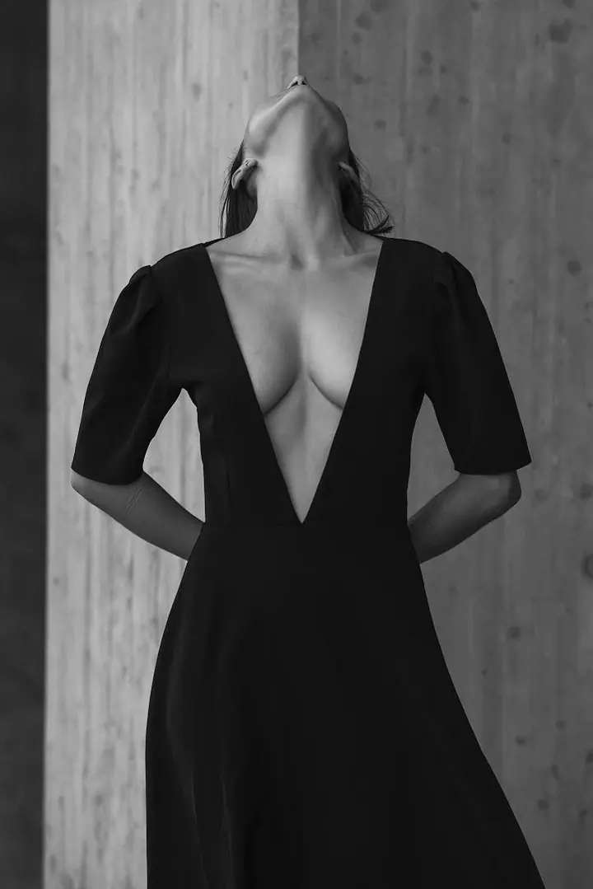
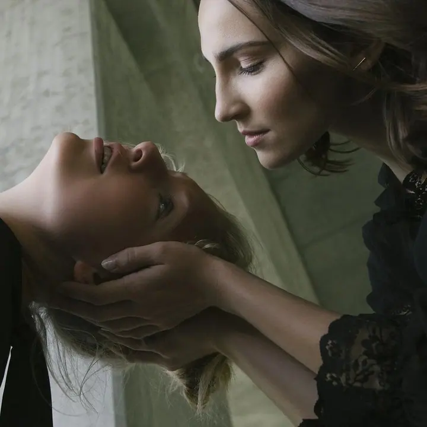

Fine art portrét
Portrét, který ukazuje podstatu člověka a jeho emoce. Fotím fine art, fashion i konceptuální portréty a také business portréty, vždy s individuálním přístupem a vlastní atmosférou.

Fine art portrétní a koncertní fotograf
Jmenuji se Mario Sikora a jsem profesionální fotograf. Tvořím fine art portréty, fashion a konceptuální fotografii a fotím koncerty, kde se hudba potkává se světlem. Každá fotografie, stejně jako vy, je originál.
Zeptat se na termín
Portrét, který ukazuje podstatu člověka a jeho emoce. Fotím fine art, fashion i konceptuální portréty a také business portréty, vždy s individuálním přístupem a vlastní atmosférou.
Vyprávím skutečné příběhy a na koncertech zachycuji energii živé hudby ve světle pódia. Fotky se hodí na desku, jako promo nebo jako autorský tisk.
Svatbu fotím jako příběh dvou lidí. Je v tom kus reportáže a kus fine art portrétu, aby fotky měly atmosféru i můj rukopis.
Jmenuji se Mario Sikora a zaměřuji se hlavně na fine art portrétní, fashion a konceptuální fotografii. Fotím ve stylech Fine Art, reportáže a konceptuálního umění, aby měl každý snímek vlastní atmosféru a můj rukopis. Originalita, emoce a specifický charakter jsou věci, které jsou mi osobní.
Jsem členem Asociace profesionálních fotografů a držitelem mezinárodního titulu EFIAP, který uděluje asociace FIAP. Kromě portrétů rád fotím koncerty, protože tam se energie živé hudby potkává s fantastickým světlem. Pracuji s fotoaparáty Hasselblad a Nikon.
Většinu mých fotografií si můžete koupit jako limitovaný tisk. Tisknu pigmentovou technologií na archivní fotopapír, pro každý snímek vybírám ten nejvhodnější. Vedu také individuální kurzy pro ty, kdo chtějí ve focení udělat další krok.

Nezávazně se informujte nebo si rovnou zamluvte termín. Stačí krátká zpráva, telefon nebo formulář.
Domluvíme se, jaký příběh chceme vyprávět, kde budeme fotit a co k tomu bude potřeba. Individuální přístup je samozřejmost.
Fotíme v klidu a s pozorností k detailu. Vedu vás tak, aby z fotky byla cítit atmosféra i vaše povaha.
Vyberu a upravím nejsilnější snímky. Pokud chcete, připravím i tisk pigmentem na archivní fotopapír.
Fotím po celé České republice, například v Praze, Ostravě, Brně nebo Třinci, a domluvit se dá i focení v zahraničí.
Ano. Většina fotografií na webu je k dispozici jako limitovaný výtisk. Tisknu pigmentem na archivní fotopapír, vždy ten nejvhodnější pro daný snímek.
Ano. Pokud chcete fotky z koncertu, na obal desky nebo jako promo, napište mi a domluvíme se na podrobnostech.
Ano, nabízím dárkové poukazy na focení. Napište mi a připravím poukaz podle toho, co chcete darovat.